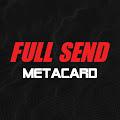 FULL SEND METACARD NFT FULL SEND METACARD 建立在以太坊区块链上，供应有限的 10,000 个 NFT，可让您访问 FULL SEND 和 NELK 帝国。 METACARD 是专为 FULL SEND 社区构建的基于以太坊区块链的 NFT 会员通行证。使用 META
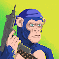 Gangstar Apes - MegaMillions 受到世界上最强大的黑帮的启发，由 160 多个特征通过算法生成。50 周的抽奖活动、168 位获奖者和 3,500,000 美元的奖金将赠送给 Gangstar Ape 持有者！ 在充满暴力和犯罪的
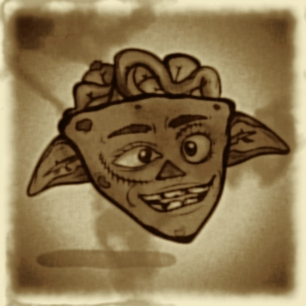 Goblin Lucky Charm 什么是地精幸运符？ Goblin Lucky Charm 是一个 NFT（Non-fungible token）集合。存储在区块链上的数字艺术品集合。 有多少个地精幸运符令牌？ 总共
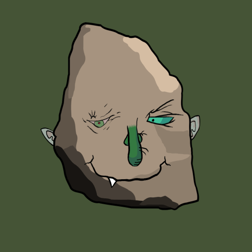 Goblin Rocks 什么是地精岩石？ Goblin Rocks 是一个 NFT（非同质代币）集合。存储在区块链上的数字艺术品集合。 Goblin Rocks 代币有多少？ 总共有 999 个 Goblin Rocks NFT。目前 467 位车主的钱包
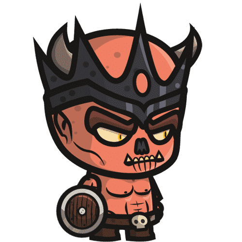 Goblin&Warriors Official Goblin Warriors 是一款具有冒险、角色扮演和动作角色扮演元素的可收藏区块链虚拟游戏。Goblin Warriors 基于以太坊网络。玩家可以收集和玩所谓的地精勇士。独特而凶
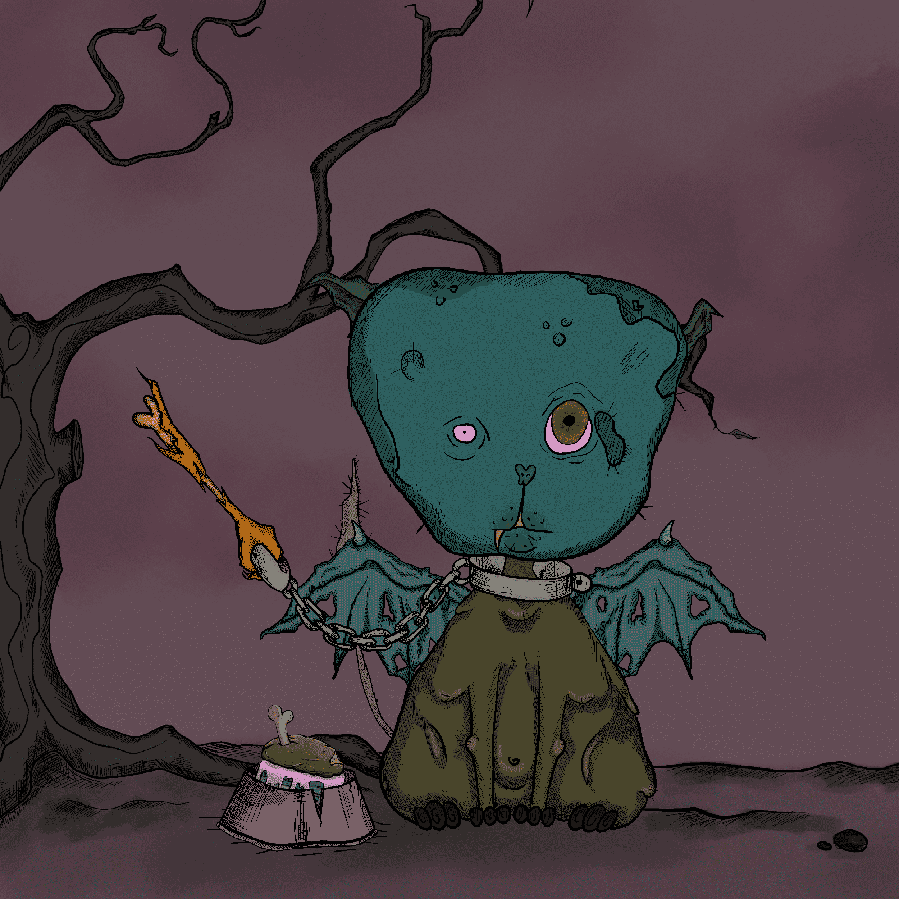 goblinpet$.wtf 什么是地精宠物$.wtf？ goblinpet$.wtf 是一个 NFT（非同质代币）集合。存储在区块链上的数字艺术品集合。 有多少个 goblinpet$.wtf 代币？ 总共有 1,333 个 goblinpet$.wtf NFT。目前 76 位所有
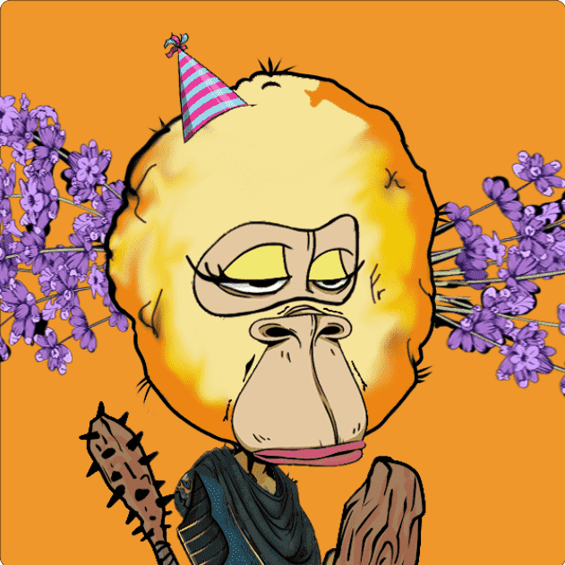 goblinqueens 什么是妖精？ goblinqueens 是一个 NFT（非同质代币）集合。存储在区块链上的数字艺术品集合。 有多少妖精代币？ 总共有 10,000 个妖精 NFT。目前 998 位拥有者的钱包中至
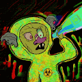 goblinrekttown.wtf 什么是 goblinrekttown.wtf？ goblinrekttown.wtf 是一个 NFT（非同质代币）集合。存储在区块链上的数字艺术品集合。 有多少 goblinrekttown.wtf 代币？ 总共有 5,555 个 goblinrekttown.wtf NF
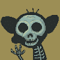 Goblinverz.wtf 什么是 Goblinverz.wtf？ Goblinverz.wtf 是一个 NFT（Non-fungible token）集合。存储在区块链上的数字艺术品集合。 有多少个 Goblinverz.wtf 代币
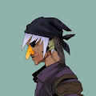 GOBZUKI ▶ 什么是GOBZUKI？ GOBZUKI 是一个 NFT（不可替代代币）集合。存储在区块链上的数字艺术品集合。 ▶ 有多少 GOBZUKI 代币？ 总共有 7,000 个 GOBZUKI NFT。目前，1,3
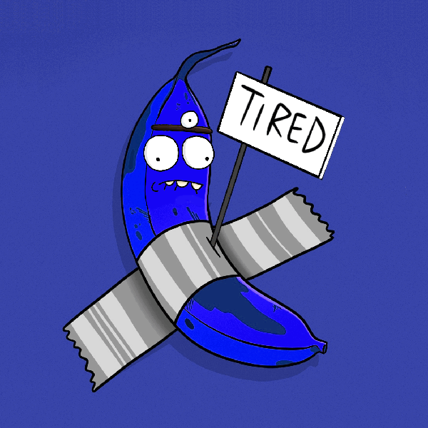 God Hates Bananoos 在一个充满活力的社区，钾短缺比比皆是。作为一个突变神器，这个 Banano 先生将成为你通往 Ape Hater Club 的桥梁。 你能想象一个可口的67 岁老人创建一个通过 DAO 管理的
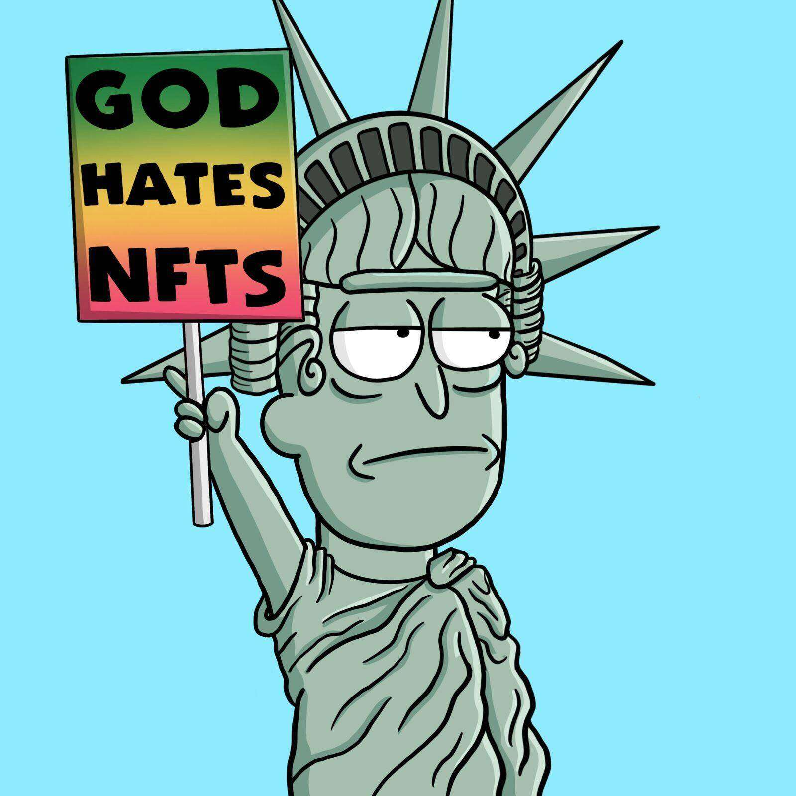 God Hates NFTees 因为讨厌一个集体的最好方法就是加入它。如果您没有 4channer 精神，请不要购买这种狗屎。CC0 你能想象一个可口的67 岁老人创建一个通过 DAO 管理的NFT 社区
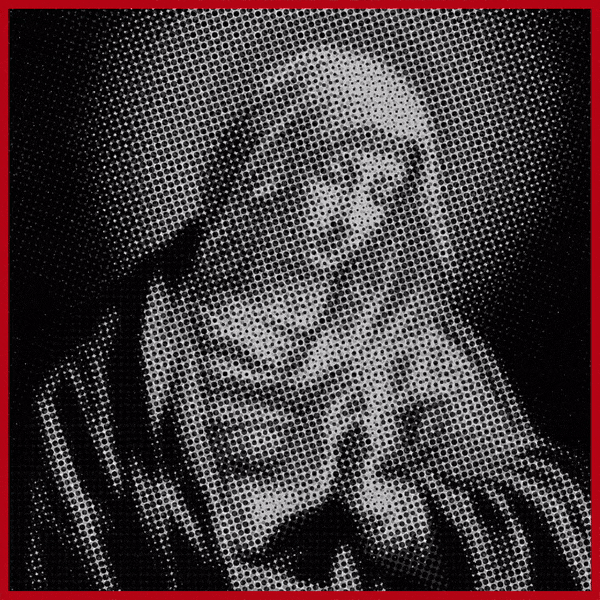 God Hates NFTs Official 1111 个抗议标志是你救赎之路的开始，没有不和谐，没有路线图，CC0。 ▶ 什么是神恨 NFT 的官员？ God Hates NFTs Official 是一个 NFT（Non-fungible toke
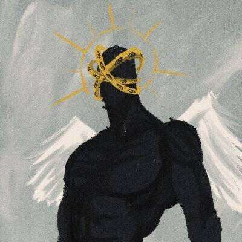 GODLY LEGION ▶ 什么是神圣军团？ GODLY LEGION 是一个 NFT（非同质代币）集合。存储在区块链上的数字艺术品集合。 ▶ 有多少 GODLY LEGION 代币？ 总共有 7,777 个 GODLY LEGION NFT。目前，3,20
GodMode by FlipsideCrypto GodMode 是 Flipside Crypto 的 1,000 个社区生成的 NFT 的集合。 ▶ FlipsideCrypto 的 GodMode 是什么？ FlipsideCrypto 的 GodMode 是一个 NFT（不可替代令牌）集合。存储在区块链上的数字艺术品集合。 ▶ FlipsideCrypto 代币有多少 Go
Gold Nft Alerts Pass nftalerts的访问通行证关于 NFT 警报应用程序： Collection Floor Alerts : 如果它跌至您指定的最高价格，您将收到警报。 薄荷警报：如果在您指定的分钟内制造了所需
Golden Token Rituals Venice RITUALS 是由 Aaron Penne 和 Boreta 发起的一个音乐和艺术创作项目，旨在庆祝出现、正念和社区。这个 Art Blocks Factory 项目通过在加利福尼亚州威尼斯的 Bright Moments 画廊亲自展示和铸造前 200 件作
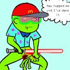 I have done it ▶ 我做了什么？ 我已经完成了它是一个 NFT（不可替代令牌）集合。存储在区块链上的数字艺术品集合。 ▶ 我做过多少代币存在？ 总共有 1,000 个我完成了 NFT
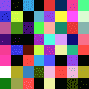 IN NOISE WE TRUST 所有信息都存在于代码中——没有什么是隐藏的。一旦执行代码 - 我们无法更改或停止它。我们没有友好的白名单——噪音是访问 INWT404 的唯一途径。 我们只与噪音
Invisible Pets - Official Invisible Pets 的灵感来自于最近流行的隐形和动画 NFT。我们非常喜欢这两个概念，因此我们决定创建自己的系列 - 具有独特的旋转！ 我们的隐形宠物系列包含各种独
IRL Psychedelics Anonymous Pass 我们是黑夜 在我们睡觉的日光之下，过往车辆的管弦乐雪崩和奴役系统的机械研磨让我们感到困扰和空虚。 当我们推拉时，我们像静电一样在拥挤的噪音中起起
IrregularPunks ▶ 什么是不规则朋克？ IrregularPunks 是一个 NFT（Non-fungible token）集合。存储在区块链上的数字艺术品集合。 ▶ 存在多少 IrregularPunks 代币？ 总共有 2,222 个 IrregularPunks
iStandwithUkraineNFT ▶ 什么是 iStandwithUkraineNFT？ iStandwithUkraineNFT 是一个 NFT（Non-fungible token）集合。存储在区块链上的数字艺术品集合。
It was not in Vain Davina 是一位双语诗人和作家、社会企业家，也是 Alegría Bilingual Media + Publishing 的创始人。 我知道讲故事在我们生活中的力量，以及创造性写作如何帮助我们实现自我转
IT'S GONNA BE TASTY ▶ 什么是好吃的？ IT’S GONNA BE TASTY 是一个 NFT（不可替代令牌）集合。存储在区块链上的数字艺术品集合。 ▶ 有多少 IT’S GONNA BE TASTY 代币？ 总共有 64 个 IT’S GONNA BE TASTY NFT。目
Itadakimasu Man ▶ 什么是Itadakimasu Man？ Itadakimasu Man 是一个 NFT（非同质代币）集合。存储在区块链上的数字艺术品集合。 ▶ 存在多少个 Itadakimasu Man 代币？ 总共有 842 个 Itadakimasu
J48BATRINKETS J48BATRINKETS：GROTTO LABS 生态系统的最新版本。整个系列只需 0.033 ETH，您就可以加入 GROTTO LABS 和我们的考古团队，挖掘该系列中最稀有的小
Jadu Hoverboard Jadu Mirrorverse 是一个增强现实游戏世界¹ ，围绕玩家社区³拥有的虚拟物品²构建。 Jadu AVA为下一代 AR打造，将成为 Web3 中最具技术和创意的Avatar。 Jetpacks 旨在让
JAIL BIRDS ▶ 什么是监狱鸟？ JAIL BIRDS 是一个 NFT（不可替代令牌）集合。存储在区块链上的数字艺术品集合。 ▶ 存在多少个 JAIL BIRDS 代币？ 总共有 2,938 个 JAIL BIRDS NFT。目前，95
Jake's World Editions ▶ 什么是杰克的世界版？ Jake’s World Editions 是一个 NFT（不可替代代币）系列。存储在区块链上的数字艺术品集合。 ▶ 杰克的世界版代币有多少？ 总共有 14 个 Jake 的世界版
JakNFT Mints ▶ 什么是 JakNFT 薄荷糖？ JakNFT Mints 是一个 NFT（不可替代代币）集合。存储在区块链上的数字艺术品集合。 ▶ 有多少 JakNFT Mints 代币？ 总共有 7 个 JakNFT Mints NFT。目前，403
JaneDAO ▶ 什么是 JaneDAO？ JaneDAO 是一个 NFT（Non-fungible token）集合。存储在区块链上的数字艺术品集合。 ▶ 有多少 JaneDAO 代币？ 总共有 1,100 个
Kangaroo Punch Club 袋鼠拳击俱乐部是一个 NFT 集合，由独特的 3D 角色组成，在以太坊区块链上具有各种复杂的独特特征。每个 NFT 都包含实用程序。Kangaroo Punch Club NFT 不仅仅是
Karafuru x HYPEBEAST x atmos 这 15,555 个 NFT 代币与 HYPEBEAST 和 atmos 共同开发，将生活方式文化、激情和影响力的缩影带入了 Web3 元界。 ▶ 什么是花风扭蛋官方？ Karofuru Gachapon Official 是一个 NFT (Non-fungible token) 集合。存储在区块链上的
Karma Monkey 新的 NFT 集合提供 Monkeyverse 的成员资格、在 DAO 中投票资助 web3 和社区项目，以及访问任务和香蕉经济。Karma 艺术由我们获得奥斯卡奖提名的团队以及加密和技术资深
Karma VIP Allow List 此集合是 OCM Karma 铸币厂的 VIP 允许列表 NFT。详情如下： A. 铸币日期为 2022 年 6 月 29 日。VIP 允许名单铸币时间从东部时间上午 12:01（太平洋时间 6 月 28 日
KarmaVioletta 业力维奥莱塔，由 KarmaVioletta 在 Sound 上创建。对这首歌发表评论，KarmaVioletta 于 2022 年 8 月 30 日首次铸造。我们目前正在追踪流通中的 25 个尚未销毁或质押
Katabolicz Genesis 经过多年的实验，身体发生了变异，但头脑很聪明，这些 Genesis Katz 发誓要保护他们的物种并引导他们进入一个明亮的新世界！Genesis Katz 的持有者不仅会收到
Katana N Samurai 2 Katana N Samurai : 最后的拉面，在以太坊网络上存储和运行。浮世绘是 1700 年代日本著名的传统艺术，我们的目标是将这种历史艺术带入整个 NFT 市场并传播日本文化。此外
KATATONIK Serozense 的 Katatonik 是由社区驱动的 NFT 收藏品的独家收藏，由技术和动画领域的最伟大的头脑制作。KATATONIK 于 2022 年 7 月 22 日首次铸造。我们目前正在追踪流通中
Kawaii Meta Collage - Opera Meets Metaverse supported by Mitsubishi Estate Kawaii Meta Collage - Opera Meets Metaverse 由 Mitsubishi Estate 支持，Kawaii Meta Collage 是 5,555 个独特的 Kawaii Girl NFT 的集合。这是“Opera Meets Metaverse by Mitsubishi Estate”项目的创世收藏，我们的 NFT 持有者将获


 组成的生成集合")